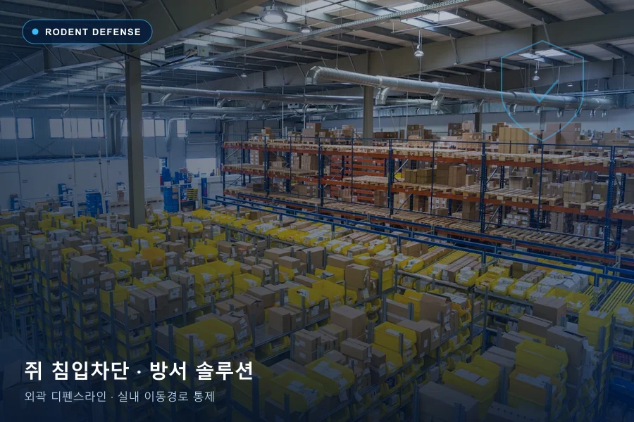

핵심 요약
침입 차단부터 지속적인 모니터링. 눈에 보이는 개체 수뿐 아니라 반복 출현, 발생 흔적과 주변 환경을 함께 확인해야 합니다.
이런 신호가 있다면 확인해주세요
- 보관 공간에서 배설물이나 포장재의 갉은 흔적이 보입니다.
- 천장이나 벽체에서 반복적인 움직임 소리가 들립니다.
- 야간에 쥐가 목격되거나 식자재에 손상 흔적이 생깁니다.
현장에서는 무엇을 점검하나요?
- 출입문 하단, 벽체·배관 관통부, 하역장
- 폐기물 보관 공간과 외곽 적치물
- 식자재 창고와 천장 내부의 이동 가능 경로
상담 전 직접 할 수 있는 환경 관리
- 식자재와 폐기물을 밀폐 보관하고 주변을 정리합니다.
- 배설물을 맨손으로 만지거나 마른 상태로 쓸어 날리지 않습니다.
- 활동 흔적을 촬영하고 차단·포획 계획을 전문가와 확인합니다.
에코플랜은 어떻게 관리하나요?
실외 유입 경로와 실내 활동 지점을 나누어 점검합니다. 사람·반려동물의 접근 가능성을 고려해 장비를 배치하고, 포획 및 섭식 흔적을 기록하며 차단 상태를 재점검합니다.
방문 횟수와 주기는 현장 조사와 모니터링 결과를 바탕으로 협의합니다. 면적, 구조, 발생 정도, 작업 범위에 따라 견적이 달라집니다.
쥐 방제 FAQ
쥐가 들어오는 틈을 막으면 해결되나요?
유입 차단은 중요한 조치지만 이미 실내에 들어온 개체와 다른 이동 경로도 확인해야 합니다. 차단 위치와 순서, 포획 계획을 함께 검토하는 것이 좋습니다.
쥐약을 직접 놓아도 되나요?
사용 제품의 허가사항과 표시사항을 따라야 하며 어린이·반려동물·비표적 동물의 접근을 막아야 합니다. 식품 취급 공간이나 반복 발생 현장은 전문가와 관리 방식을 상의하세요.
내용 기준: 에코플랜 제공 서비스 자료 및 공식 홈페이지 · 구성일
시설별 적용 범위와 작업 조건은 현장 확인 후 안내합니다. 서비스 내용 문의
시설별 적용 범위와 작업 조건은 현장 확인 후 안내합니다. 서비스 내용 문의